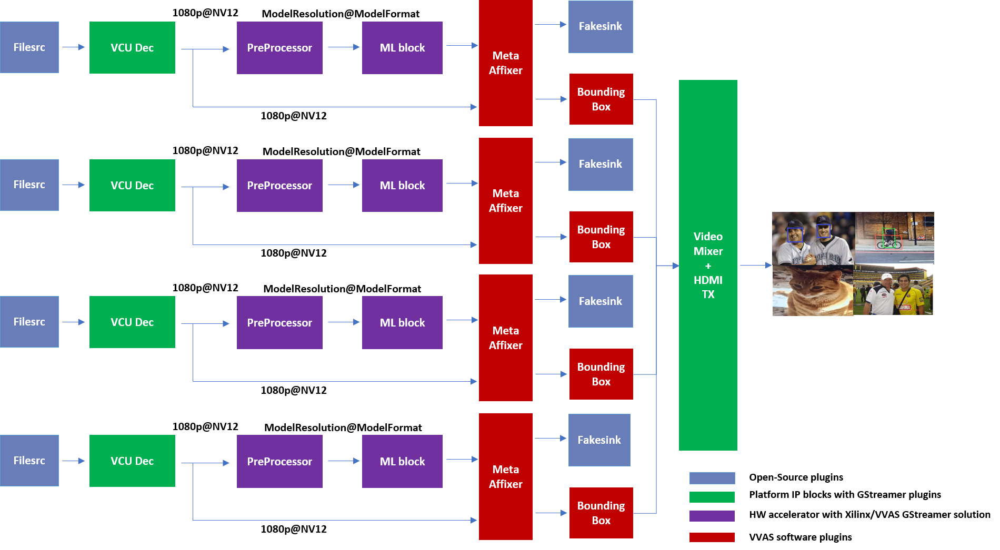

Multichannel ML¶
Vitis Video Analytics SDK (VVAS) is a Xilinx framework to build different video analytics solutions on Xilinx platforms.
This tutorial begins with building a single stream Machine learning pipeline using VVAS and then scales up to build four channel Machine learning pipelines.
The final goal would be to run some ML model on the four H.264 decoded streams and mix the videos and display the four streams on HDMI Monitor.
By the end of this tutorial, you should be able to run the following pipeline.
Requirements¶
Hardware Requirements¶
Micro USB cable, connected to laptop or desktop computer for the terminal emulator
MicroSD card, 8 GB or larger, class 10 (recommended)
HDMI 2.0 supported Monitor with 3840x2160 as the native resolution
HDMI 2.0 cable
Software Requirements¶
(Refer Vitis Unified Software Development Platform 2021.1 Documentation for installation instructions)
Vitis™ Unified Software Platform version 2021.1
Petalinux tool version 2021.1
Serial terminal emulator (for example, Tera Term)
Git
Host system with Ubuntu 18.04/20.04 (Recommended)
System Requirements¶
Board must have access to the internet and be accessible from your development system
Platform¶
This tutorial needs video codec unit (VCU) decoder, Video Mixer and HDMI Tx, hence select a platform having these IPs.
This tutorial uses the VVAS zcu104_vcuDec_vmixHdmiTx platform because it supports VCU decoder, Video mixer and HDMI Tx subsystem.
For more information on Vitis platforms, see Vitis Software Platform.
Note
VVAS platform zcu104_vcuDec_vmixHdmiTx may not be performance optimal. This platform is made available as reference and for tutorial demonstration.
Note
VVAS platform zcu104_vcuDec_vmixHdmiTx adds patch to irps5401 driver for zcu104 board to support multi thread execution of VAI models.
This patch shouldn’t be applied to other boards
and is not part of the official Xilinx released 2021.1 Petalinux.
Building Blocks¶
Let us begin with constructing a single stream video pipeline based on the components selected.

We shall build the pipeline incrementally, starting from the source element and keep appending the pipeline per the use case.
First setup the ZCU104 board with steps outlined in Board bring up. Facedetect model (densebox_320_320) is used in constructing the single stream pipeline, hence choose a mp4 video file with human faces.
VCU Decoder block¶
A VCU Decoder block is required to decode the H.264/H.265 encoded stream and feed the decoded data to the ML block for inference.
For good performance, the hardware VCU block is expected to be part of the Xilinx platform.
The zcu104_vcuDec_vmixHdmiTx platform provides VCU as a hardware block as part of the design and the omxh264dec plugin for decoding.
Refer to pg252 for more information on the Xilinx VCU block.
{kind=link}
VVAS solution for VCU block¶
Standalone VCU block can be tested with following pipeline:
{kind=link}
Sample video pipeline for VCU block¶
Gstreamer command:
gst-launch-1.0 filesrc location=/home/root/videos/face_detect.mp4 ! qtdemux ! h264parse ! omxh264dec internal-entropy-buffers=3 ! filesink location=./vcu_out.nv12 -v
Preprocessor block¶
Different ML models supported by the DPU have different preprocessing requirements that can include resize, mean subtraction, scale normalization etc. Additionally, the DPU has a requirement to be fed with BGR/RGB images. The VCU decoder at the input of the DPU generates NV12 images. Depending on the model selected, the preprocessor block is expected to support the following operations:
Resize
Color space conversion
Mean Subtraction
Scale Normalization
Although all these operations can be achieved in software, the performance impact is substantial. VVAS support Multiscaler hardware accelerator using ivas_xabrscaler GStreamer plugin.

VVAS solution for Preprocessor block¶
Different models have different requirements for mean and scale values, which can be configured via the plugin properties. Table 1 lists the plugin properties provided by ivas_xabrscaler gstreamer plugin to configure mean and scale values. These properties are tested in the context of this tutorial only.
Table 1: ivas_xabrscaler Plug-in Properties to configure mean and scale values
Property Name |
Type |
Range |
Default |
Description |
|---|---|---|---|---|
alpha-b |
float |
0 to 128 |
0 |
Mean subtraction for blue channel |
alpha-g |
float |
0 to 128 |
0 |
Mean subtraction for green channel |
alpha-r |
float |
0 to 128 |
0 |
Mean subtraction for red channel |
beta-b |
float |
0 to 1 |
1 |
Scaling for blue channel |
beta-g |
float |
0 to 1 |
1 |
Scaling for green channel |
beta-r |
float |
0 to 1 |
1 |
Scaling for red channel |
Preprocessor block can be tested with following pipeline:

Sample Video Pipeline for VCU + Preprocessor block¶
Gstreamer command:
gst-launch-1.0 -v \
filesrc location=/home/root/videos/face_detect.mp4 ! qtdemux ! h264parse ! omxh264dec internal-entropy-buffers=3 ! \
ivas_xabrscaler xclbin-location=/media/sd-mmcblk0p1/dpu.xclbin kernel-name=v_multi_scaler:v_multi_scaler_1 ! \
"video/x-raw, width=320, height=320, format=BGR" ! filesink location=./pre_proc.bgr
Note
Check the pre_proc.bgr file in some raw BGR format reader tool to verify that the output of preprocessor is correct.
The following Gstreamer command is for pre-processing with a mean value of 128, which is required by the FACEDETECT class of DPU.
gst-launch-1.0 -v \
filesrc location=/home/root/videos/face_detect.mp4 ! qtdemux ! h264parse ! omxh264dec internal-entropy-buffers=3 ! \
ivas_xabrscaler xclbin-location=/media/sd-mmcblk0p1/dpu.xclbin kernel-name=v_multi_scaler:v_multi_scaler_1 alpha_r=128 alpha_g=128 alpha_b=128 ! \
"video/x-raw, width=320, height=320, format=BGR" ! filesink location=./pre_proc.bgr
Machine Learning (ML) block¶
Machine Learning inference is performed using DPU hardware accelerator and a gstreamer plug-in is used to control it. VVAS supports the DPU kernel released with Vitis-AI 1.4, and the VVAS infrastructure plugin ivas_xfilter is used along with the ivas_xdpuinfer accelerator software library. The beauty of this VVAS solution is that you do not need to figure out the resolution required for various DPU supported models, because the VVAS ML block identifies it dynamically based on the requested model and negotiates the same resolution with its upstream element. In this case, the upstream element is the Preprocessor block, thus preprocessor converts the input image from the VCU as required by the model selected for the ML block. The model can be selected in the JSON, which is passed to ivas_xfilter.

VVAS solution for ML block¶
ML block can be tested with following pipeline:

Sample Video Pipeline adding ML block¶
Gstreamer command:
gst-launch-1.0 -v \
filesrc location=/home/root/videos/face_detect.mp4 ! qtdemux ! h264parse ! omxh264dec internal-entropy-buffers=3 ! \
ivas_xabrscaler xclbin-location=/media/sd-mmcblk0p1/dpu.xclbin kernel-name=v_multi_scaler:v_multi_scaler_1 alpha_r=128 alpha_g=128 alpha_b=128 ! \
ivas_xfilter kernels-config="/home/root/utils/jsons/dpu/kernel_densebox_320_320.json" ! fakesink
You can observe that the caps mentioned after the ivas_xabrscaler in the previous pipeline are removed now as the VVAS ML solution auto negotiates the caps based on the model selected. The following is a sample JSON kernel_densebox_320_320.json for running the densebox_320_320 DPU model that detects a human face.
{
"xclbin-location":"/media/sd-mmcblk0p1/dpu.xclbin",
"ivas-library-repo": "/usr/lib/",
"element-mode":"inplace",
"kernels" :[
{
"library-name":"libivas_xdpuinfer.so",
"config": {
"model-name" : "densebox_320_320",
"model-class" : "FACEDETECT",
"model-format" : "BGR",
"model-path" : "/usr/share/vitis_ai_library/models/",
"run_time_model" : false,
"need_preprocess" : false,
"performance_test" : false,
"debug_level" : 1
}
}
]
}
Note
In this pipeline, if the debug_level of ivas_xdpuinfer library is increased to 4, you can see the objects detected in logs.
The debug level can be increased in the kernel_densebox_320_320.json JSON file.
The sample log output is shown below.

Once the correct detection is observed you can move to the next advanced blocks.
Meta Affixer block and HDMI Tx¶
In the previous section, the elementary ML pipeline is working but the output image from the preprocessor block might not be the best for display, as several preprocessing operations were done on this image before feeding it to the DPU. To have a good user experience, you must fork the output of the VCU decoder block into two streams, one for the ML block and other for the display. To get the scaled metadata for the original image you need to add one meta scale block, which converts the detection co-ordinates obtained by the ML model for its input resolution with respect to the original output stream from the VCU decoder. This can be done using the ivas_xmetaaffixer plugin which is implemented entirely in software.
You can add HDMI Tx using kmssink Gstreamer plugin along with the ivas_xmetaaffixer in the previous pipeline. This enables viewing video on HDMI monitor. You need to set DRM bus-id, plane-id and rendering position as kmssink properties.
The bus-id for the zcu104_vcuDec_vmixHdmiTx platform is fixed to a0130000.v_mix.
The video mixer in zcu104_vcuDec_vmixHdmiTx platform supports 9 planes of NV12 format, with plane-id starting from 34 to 42.
You need to set the plane-id within this range to output the video stream on one of these planes.
The render-rectangle property sets the position of video stream on screen in the format “<x, y, width, height>”.
Here, x, y represents the starting position of the image on screen,
width represents width of the video image, and height represents height of the video image.
Sample video pipeline for adding meta affixer block and HDMI Tx is shown as below

Sample video pipeline adding Meta Affixer and HDMI Tx blocks¶
Gstreamer command:
gst-launch-1.0 -v \
filesrc location=/home/root/videos/face_detect.mp4 ! qtdemux ! h264parse ! omxh264dec internal-entropy-buffers=3 ! \
tee name=t0 \
t0.src_0 ! queue ! \
ivas_xabrscaler xclbin-location=/media/sd-mmcblk0p1/dpu.xclbin kernel-name=v_multi_scaler:v_multi_scaler_1 alpha_r=128 alpha_g=128 alpha_b=128 ! \
ivas_xfilter kernels-config="/home/root/utils/jsons/dpu/kernel_densebox_320_320.json" ! \
scalem0.sink_master ivas_xmetaaffixer name=scalem0 scalem0.src_master ! fakesink \
t0.src_1 ! queue ! \
scalem0.sink_slave_0 scalem0.src_slave_0 ! queue ! \
kmssink plane-id=34 bus-id="a0130000.v_mix" render-rectangle="<0,0,1920,1080>"
Note
It is assumed that the video resolution of the input file sample.mp4 is 1080P.
Note
Though you may not observe any ML output on monitor with this pipeline, but we should see the input image getting displayed in monitor by this pipeline.
Bounding Box block¶
To have an output of ML displayed on the monitor, you should draw the results on an image. The ivas_xboundingbox software acceleration library comes in handy in this case. This library along with VVAS infrastructure plug-in ivas_xfilter can provide the bounding box functionality.
Sample video pipeline for adding bounding box block is shown as below
Sample Video Pipeline adding Bounding Box block¶
Gstreamer command:
gst-launch-1.0 -v \
filesrc location=/home/root/videos/face_detect.mp4 ! qtdemux ! h264parse ! omxh264dec internal-entropy-buffers=3 ! \
tee name=t0 \
t0.src_0 ! queue ! \
ivas_xabrscaler xclbin-location=/media/sd-mmcblk0p1/dpu.xclbin kernel-name=v_multi_scaler:v_multi_scaler_1 alpha_r=128 alpha_g=128 alpha_b=128 ! \
ivas_xfilter kernels-config="/home/root/utils/jsons/dpu/kernel_densebox_320_320.json" ! \
scalem0.sink_master ivas_xmetaaffixer name=scalem0 scalem0.src_master ! fakesink \
t0.src_1 ! queue ! \
scalem0.sink_slave_0 scalem0.src_slave_0 ! queue ! \
ivas_xfilter kernels-config="/home/root/utils/jsons/bbox/kernel_boundingbox_facedetect.json" ! \
kmssink plane-id=34 bus-id="a0130000.v_mix" render-rectangle="<0,0,1920,1080>"
The following sample JSON file kernel_boundingbox_facedetect.json is used to draw a bounding box on detected objects.
{
"xclbin-location":"/media/sd-mmcblk0p1/dpu.xclbin",
"ivas-library-repo": "/usr/lib/",
"element-mode":"inplace",
"kernels" :[
{
"library-name":"libivas_xboundingbox.so",
"config": {
"model-name" : "densebox_320_320",
"display_output" : 1,
"font_size" : 0.5,
"font" : 3,
"thickness" : 3,
"debug_level" : 1,
"label_color" : { "blue" : 0, "green" : 0, "red" : 0 },
"label_filter" : [ "class", "probability" ],
"classes" : [
]
}
}
]
}
With addition of bounding box, your pipeline for single stream is complete.
Four Channel ML pipeline¶
Now, constructing a four-channel pipeline is simply duplicating the above pipeline four times for different models and positioning each output video appropriately on screen on different plane-ids.
Below Vitis AI models are used as example in this tutorial. Refer Vitis AI User Documentation to compile different models using arch.json file from release package.
densebox_320_320 (Face detection)
yolov3_adas_pruned_0_9 (Object detection)
resnet50 (Classification)
refinedet_pruned_0_96 (Pedestrian detector)
A reference pipeline for four channel ML is given below.
gst-launch-1.0 -v \
filesrc location=/home/root/videos/face_detect.mp4 ! qtdemux ! h264parse ! \
omxh264dec internal-entropy-buffers=3 ! queue ! \
tee name=t \
t.src_0 ! queue ! \
ivas_xabrscaler xclbin-location=/media/sd-mmcblk0p1/dpu.xclbin kernel-name=v_multi_scaler:v_multi_scaler_1 alpha_r=128 alpha_g=128 alpha_b=128 ! queue ! \
ivas_xfilter kernels-config="/home/root/utils/jsons/dpu/kernel_densebox_320_320.json" ! queue ! \
scalem.sink_master ivas_xmetaaffixer name=scalem scalem.src_master ! queue ! fakesink \
t.src_1 ! queue ! \
scalem.sink_slave_0 scalem.src_slave_0 ! queue ! \
ivas_xfilter kernels-config="/home/root/utils/jsons/bbox/kernel_boundingbox_facedetect.json" ! \
fpsdisplaysink video-sink="kmssink plane-id=34 bus-id=a0130000.v_mix render-rectangle=<0,0,1920,1080>" text-overlay=false sync=false \
filesrc location=/home/root/videos/yolov3.mp4 ! qtdemux ! h264parse ! \
omxh264dec internal-entropy-buffers=3 ! queue ! \
tee name=t2 \
t2.src_0 ! queue ! \
ivas_xabrscaler xclbin-location=/media/sd-mmcblk0p1/dpu.xclbin kernel-name=v_multi_scaler:v_multi_scaler_1 alpha_r=0 alpha_g=0 alpha_b=0 beta_r=0.25 beta_g=0.25 beta_b=0.25 ! queue ! \
ivas_xfilter kernels-config="/home/root/utils/jsons/dpu/kernel_yolov3_adas_pruned_0_9.json" ! queue ! \
scalem2.sink_master ivas_xmetaaffixer name=scalem2 scalem2.src_master ! queue ! fakesink \
t2.src_1 ! queue ! \
scalem2.sink_slave_0 scalem2.src_slave_0 ! queue ! \
ivas_xfilter kernels-config="/home/root/utils/jsons/bbox/kernel_boundingbox_yolov3_adas_pruned_0_9.json" ! \
fpsdisplaysink video-sink="kmssink plane-id=35 bus-id=a0130000.v_mix render-rectangle=<1920,0,1920,1080>" text-overlay=false sync=false \
filesrc location=/home/root/videos/classification.mp4 ! qtdemux ! h264parse ! \
omxh264dec internal-entropy-buffers=3 ! queue ! \
tee name=t3 \
t3.src_0 ! queue ! \
ivas_xabrscaler xclbin-location=/media/sd-mmcblk0p1/dpu.xclbin kernel-name=v_multi_scaler:v_multi_scaler_1 alpha_r=104 alpha_g=107 alpha_b=123 beta_r=1 beta_g=1 beta_b=1 ! queue ! \
ivas_xfilter kernels-config="/home/root/utils/jsons/dpu/kernel_resnet50.json" ! queue ! \
scalem3.sink_master ivas_xmetaaffixer name=scalem3 scalem3.src_master ! queue ! fakesink \
t3.src_1 ! queue ! \
scalem3.sink_slave_0 scalem3.src_slave_0 ! queue ! \
ivas_xfilter kernels-config="/home/root/utils/jsons/bbox/kernel_boundingbox_resnet50.json" ! \
fpsdisplaysink video-sink="kmssink plane-id=36 bus-id=a0130000.v_mix render-rectangle=<0,1080,1920,1080>" text-overlay=false sync=false \
filesrc location=/home/root/videos/refinedet.mp4 ! qtdemux ! h264parse ! \
omxh264dec internal-entropy-buffers=3 ! queue ! \
tee name=t4 \
t4.src_0 ! queue ! \
ivas_xabrscaler xclbin-location=/media/sd-mmcblk0p1/dpu.xclbin kernel-name=v_multi_scaler:v_multi_scaler_1 alpha_r=104 alpha_g=117 alpha_b=123 beta_r=1 beta_g=1 beta_b=1 ! queue ! \
ivas_xfilter kernels-config="/home/root/utils/jsons/dpu/kernel_refinedet_pruned_0_96.json" ! queue ! \
scalem4.sink_master ivas_xmetaaffixer name=scalem4 scalem4.src_master ! queue ! fakesink \
t4.src_1 ! queue ! \
scalem4.sink_slave_0 scalem4.src_slave_0 ! queue ! \
ivas_xfilter kernels-config="/home/root/utils/jsons/bbox/kernel_boundingbox_refinedet_pruned_0_96.json" ! \
fpsdisplaysink video-sink="kmssink plane-id=37 bus-id=a0130000.v_mix render-rectangle=<1920,1080,1920,1080>" text-overlay=false sync=false
The above command is available in the release package as multichannel_ml.sh.
Now, let’s look into implementing the design and executing using Vitis AI and VVAS.
Implementation¶
Release package provides prebuilt binaries including SD card image that has the implemented design and required software, VAI models and scripts.
Download the release package. Let the path where release package is downloaded be represented as <RELEASE_PATH>.
Below steps are required only if the platform and example design need to be regenerated, else move to section Board bring up to try the released SD card image.
Platform¶
As previously described, this solution uses the VVAS zcu104_vcuDec_vmixHdmiTx platform.
The first and foremost step is to build this platform from its sources.
The platform provides the following hardware and software components of the pipeline:
VCU hardened IP block
Video Mixer and HDMI Tx soft IP blocks
Opensource framework like Gstreamer, OpenCV
Vitis AI 1.4 libraries
Xilinx Runtime (XRT)
omxh264dec Gstreamer plugin
kmmsink Gstreamer plugin
VVAS Gstreamer plugins and libraries
ivas_xfilter gstreamer plugin
ivas_xabrscaler multiscaler accelerator plugin
ivas_xdpuinfer software accelerator library
ivas_xboundingbox software accelerator library
ivas_xmetaaffixer gstreamer plugin
Steps for building the platform:
1. Download the VVAS git repository. Let the path where VVAS repo is downloaded be represented as <VVAS_REPO>.
git clone https://github.com/Xilinx/VVAS.git
2. Setup the toolchain
source <2021.1_Vitis>/settings64.sh
source <2021.1_Petalinux>/settings.sh
source <2021.1_XRT>/setenv.sh
3. Change directory to the platform
cd <VVAS_REPO>/VVAS/ivas-platforms/Embedded/zcu104_vcuDec_vmixHdmiTx
4. Build the platform
make
After the build is finished, the platform is available at
<VVAS_REPO>/VVAS/ivas-platforms/Embedded/zcu104_vcuDec_vmixHdmiTx/platform_repo/xilinx_zcu104_vcuDec_vmixHdmiTx_202110_1/export/xilinx_zcu104_vcuDec_vmixHdmiTx_202110_1/.
Let the path to platform be represented as <PLATFORM_PATH>.
Vitis Example Project¶
A Vitis build is required to stitch all the discussed hardware accelerators to the platform design. The hardware accelerators required are:
DPU (Xilinx ML IP)
Multiscaler (Xilinx Preprocessing IP)
The Xilinx deep learning processor unit (DPU) is a configurable computation engine dedicated for convolutional neural networks. Refer to DPU-TRD for more information and compiling the DPU accelerator.
The multichannel_ml example design adds two instances of B3136 DPU configuration and a single instance of Multiscaler to the zcu104_vcuDec_vmixHdmiTx platform.
Steps for building Vitis example project:
1. Download Vitis-AI. Let the path where Vitis-AI is downloaded be represented as <VITIS_AI_REPO>.
git clone https://github.com/Xilinx/Vitis-AI.git
cd Vitis-AI/
git checkout tags/v1.4 -b v1.4
2. Change directory to example project
cd <VVAS_REPO>/VVAS/ivas-examples/Embedded/multichannel_ml/
3. Compile the project
make PLATFORM=<PLATFORM_PATH>/xilinx_zcu104_vcuDec_vmixHdmiTx_202110_1.xpfm DPU_TRD_PATH=<VITIS_AI_REPO>/Vitis-AI/dsa/DPU-TRD/ HW_ACCEL_PATH==<VVAS_REPO>/VVAS/ivas-accel-hw/
Note
Depending on the build machine capacity, building this example project can take about 3 or more hours to compile.
Once the build is completed, you can find the sdcard image at
<VVAS_REPO>/VVAS/ivas-examples/Embedded/multichannel_ml/binary_container_1/sd_card.img.
Board bring up¶
Burn the SD card image
sd_card.img(Either from Release package or generated) using a SD card flashing tool like dd, Win32DiskImager, or Balena Etcher.Boot the board using this SD card.
Once the board is booted, resize the ext4 partition to extend to full SD card size:
resize-part /dev/mmcblk0p2
From the host system, copy the video files on the board:
mkdir -p ~/videos scp -r <Path to Videos> root@<board ip>:~/videos
Note
Password for root user is root.
Note
Video files are not provided as part of release package.
Copy the model json files and scripts on the board:
scp -r <RELEASE_PATH>/vvas_multichannel_ml_2021.1_zcu104/utils/ root@<board ip>:~
Copy the Vitis-AI model files on board:
mkdir -p /usr/share/vitis_ai_library/models scp -r <RELEASE_PATH>/vvas_multichannel_ml_2021.1_zcu104/vai_models/* /usr/share/vitis_ai_library/models/
Execute four channel Gstreamer pipeline script:
sh ~/utils/scripts/multichannel_ml.sh
You can now see the 4-channel mixed video on the HDMI monitor.
Known Issues¶
1. Sometimes on reboot, the HDMI screen remains blank and following error log is observed during the boot. Power OFF and ON (Hard reboot) the board to fix the issue:
xlnx-drm-hdmi a0100000.v_hdmi_tx_ss: tx-clk not ready -EPROBE_DEFER